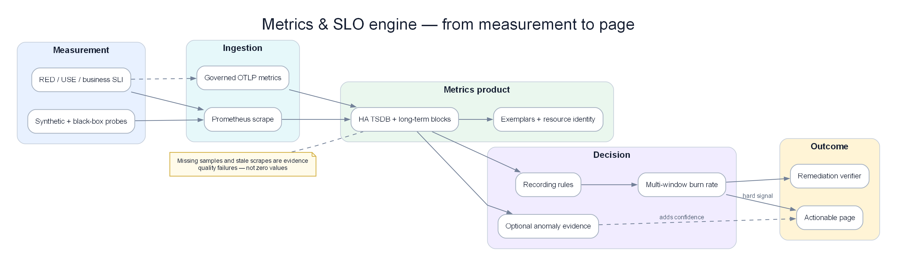

Chapter 03 — Prometheus¶
Prometheus is the de-facto standard for collecting, storing, and alerting on metrics in cloud-native environments. Deep understanding of TSDB internals, the scrape engine, and HA architecture is a prerequisite for building a reliable AIOps platform.

Poster: metric contracts become SLIs, multi-window burn rates, versioned features, and stateful decisions.
Prerequisites¶
- 01 — Observability — metric types and basic PromQL
- 02 — OpenTelemetry — how metrics flow into Prometheus
Related Documents¶
- 09 — Anomaly Detection — Prometheus metrics as input
- 10 — Alert Correlation — consumes alerts from Prometheus
Next Reading¶
After this chapter, continue to 04 — Loki.
1. Why Prometheus?¶
KEY IDEA
Prometheus was designed with a simple philosophy: pull-based scraping + multi-dimensional labels + PromQL. Instead of waiting for services to push data, Prometheus actively requests each service’s /metrics every 15 seconds. That makes it possible to know immediately when a service stops responding (no scrape response = down).
Tip
Why Pull instead of Push? Pull-based has three advantages: (1) Prometheus controls collection frequency and is not “spammed” by services; (2) If a service is down → Prometheus detects it immediately (scrape fail); (3) Easier to debug: you can curl the /metrics endpoint directly to see raw data. Trade-off: services in private networks need Pushgateway for short-lived batch jobs.
Design Philosophy¶
- Pull-based scraping: Prometheus polls targets; it does not wait for push. Easy to detect service down.
- Multi-dimensional data model: Labels are first-class citizens. Each time series =
metric_name{label_key="value"} - PromQL: A query language specialized for time series. Not SQL.
- No long-term storage: Only ~15 days local. Long-term storage via remote write → Thanos/VictoriaMetrics.
- Single binary: No external DB, no ZooKeeper required.
What Prometheus Is Good At¶
- Collecting metrics for infrastructure and application monitoring
- Dynamic service discovery (Kubernetes, EC2)
- Flexible PromQL queries
- Alert evaluation with complex expressions
What Prometheus Is NOT Good At¶
| Not suitable for | Alternative |
|---|---|
| Long-term storage (> 15 days) | Thanos or VictoriaMetrics |
| High-cardinality (> 10M series) | VictoriaMetrics |
| Horizontal write scaling | VictoriaMetrics Cluster |
| Event data (logs, traces) | Loki (logs), Tempo (traces) |
2. Internal Architecture¶
KEY IDEA
Prometheus is a monolith — everything in one binary: scrape engine, TSDB, rule evaluator, query engine, HTTP API. The data path is simple: Service → Scrape Engine → WAL → Head Block (memory) → TSDB Blocks (disk) → Remote Write (long-term).
graph TD
subgraph Targets["Monitored Targets"]
SVC[Microservices\n:8080/metrics]
NODE[Node Exporter\n:9100/metrics]
K8S[kube-state-metrics\n:8080/metrics]
end
subgraph Prometheus["Prometheus Server"]
SD[Service Discovery\nKubernetes · EC2 · DNS]
SCRAPE[Scrape Engine\nHTTP GET /metrics every 15s]
WAL[Write-Ahead Log\n/prometheus/wal/]
HEAD[Head Block\nin-memory 2h window]
TSDB[TSDB Blocks\non-disk]
RULES[Rule Evaluator\nRecording · Alerting]
QENG[Query Engine PromQL]
API[HTTP API :9090]
end
subgraph Remote["Remote Storage"]
RW[Remote Write\n→ Thanos · VictoriaMetrics]
end
SD -->|discover targets| SCRAPE
Targets -->|HTTP GET /metrics| SCRAPE
SCRAPE -->|write samples| WAL
WAL -->|persist| HEAD
HEAD -->|compact every 2h| TSDB
TSDB -->|query| QENG
HEAD -->|query| QENG
QENG --> API
RULES -->|evaluate| QENG
TSDB -->|remote_write| RW
style Targets fill:#dbeafe,color:#1e293b
style Prometheus fill:#dcfce7,color:#1e293b
style Remote fill:#f3e8ff,color:#1e293bKey Endpoints¶
| Endpoint | Description |
|---|---|
/api/v1/query |
Instant query |
/api/v1/query_range |
Range query (for dashboards) |
/api/v1/targets |
All discovered targets + health |
/api/v1/alerts |
Currently active alerts |
/api/v1/write |
Remote write endpoint |
/-/reload |
Reload config |
/-/ready |
Readiness check |
3. TSDB Internals¶
KEY IDEA
Prometheus’s TSDB (Time Series Database) uses two main mechanisms: WAL (Write-Ahead Log) to avoid data loss on crash, and XOR delta encoding (Facebook’s Gorilla algorithm) to compress data ~12x versus raw binary. If you store 1M series × 1 sample/15s → only ~7.5GB/day instead of 90GB if stored raw.
Data Organization¶
/prometheus/data/
├── 01HQRZ.../ ← Block (2h window)
│ ├── chunks/
│ │ ├── 000001 ← Compressed time series data
│ │ └── 000002
│ ├── index ← Inverted index: label→series→chunks
│ └── meta.json ← Block metadata
├── 01HQSA.../ ← Older block
└── wal/ ← Write-Ahead Log (newest data)
├── 00000000
└── checkpoint.000000X/
Write Path¶
sequenceDiagram
participant Scraper
participant WAL
participant HeadBlock
participant DiskBlock
Scraper->>WAL: append(series, timestamp, value)
WAL-->>Scraper: write confirmed ← First persistence
Scraper->>HeadBlock: add to in-memory series
Note over HeadBlock: Every 2 hours...
HeadBlock->>DiskBlock: encode 120 samples → XOR chunk (~1.3 bytes/sample)
DiskBlock->>DiskBlock: build inverted index
DiskBlock->>WAL: truncate old WAL segmentsWAL (Write-Ahead Log)¶
Important
WAL note: WAL corruption = data loss. Monitor prometheus_tsdb_wal_corruptions_total and alert when > 0.
prometheus_tsdb_wal_corruptions_total # Alert when > 0
prometheus_tsdb_wal_replay_duration_seconds # Replay time on restart
Restart time estimate: about 1 minute to replay each 1GB of WAL.
Chunk Encoding — XOR Delta (Gorilla Compression)¶
Tip
Why does Gorilla compression reach ~1.3 bytes/sample? Timestamps are usually evenly spaced at 15s → small deltas → even smaller delta-of-delta → encode in 1–2 bits. Values change little between scrapes → XOR is mostly zeros → compresses well.
Compared to raw storage: 8 bytes (float64) + 8 bytes (int64 timestamp) = 16 bytes/sample. With Gorilla: ~1.3 bytes/sample = 12x compression.
Storage estimate:
1 million active series
× 1 sample every 15 seconds
× 1.3 bytes/sample
× 86400 seconds/day
= 7.5 GB/day
15-day retention: 112 GB for 1M series @ 15s resolution
Block Compaction¶
Retention configuration:
# CLI flags when starting Prometheus
--storage.tsdb.retention.time=15d # Delete data older than 15 days
--storage.tsdb.retention.size=500GB # Or when exceeding 500GB
--storage.tsdb.path=/prometheus/data
4. The Scraping Engine¶
KEY IDEA
The scrape engine is a simple loop: every 15 seconds, Prometheus HTTP GETs /metrics on each target, parses Prometheus exposition format, applies relabeling rules, then writes into the TSDB. The hardest part is relabeling: using regex to filter/transform metric labels before storage — done wrong, you store junk in the TSDB.
Key Scrape Configuration¶
global:
scrape_interval: 15s # Scrape frequency — lower to 5s if you need higher resolution
scrape_timeout: 10s # MUST be < scrape_interval
evaluation_interval: 15s # Rule evaluation frequency
external_labels:
cluster: prod-us-east-1 # Required for Thanos deduplication
replica: '$(POD_NAME)' # Different between HA pair members
scrape_configs:
- job_name: kubernetes-pods
honor_labels: false # Do not let targets override job/instance labels
kubernetes_sd_configs:
- role: pod
relabel_configs:
# Only scrape pods with annotation "prometheus.io/scrape: true"
- source_labels: [__meta_kubernetes_pod_annotation_prometheus_io_scrape]
action: keep
regex: "true"
# Use custom port from annotation
- source_labels: [__address__, __meta_kubernetes_pod_annotation_prometheus_io_port]
action: replace
regex: ([^:]+)(?::\d+)?;(\d+)
replacement: $1:$2
target_label: __address__
# Attach k8s metadata as labels
- source_labels: [__meta_kubernetes_namespace]
target_label: namespace
- source_labels: [__meta_kubernetes_pod_name]
target_label: pod
metric_relabel_configs:
# Drop high-cardinality Go runtime metrics before storage
- source_labels: [__name__]
action: drop
regex: "go_gc_.*|go_memstats_alloc_bytes_total"
5. Service Discovery¶
KEY IDEA
Service discovery is why Prometheus works well in dynamic Kubernetes environments — no static target list required. Prometheus automatically discovers new pods/services/nodes and starts scraping as soon as they appear.
Kubernetes SD Roles¶
| Role | Discovers | Metadata labels |
|---|---|---|
node |
All K8s nodes | Node labels, annotations |
pod |
All pods | Pod labels, container info |
service |
All services | Service labels, annotations |
endpoints |
Service endpoint IPs | Pod + service metadata |
Standard Pod Annotations¶
# Add to Deployment/Pod spec so Prometheus scrapes automatically
metadata:
annotations:
prometheus.io/scrape: "true"
prometheus.io/port: "8080"
prometheus.io/path: "/actuator/prometheus" # Spring Boot
Relabeling Reference¶
Actions:
- keep: Drop targets that do NOT match the regex
- drop: Drop targets that match the regex
- replace: Replace label value with regex capture
- labelmap: Copy labels matching regex
- labeldrop: Delete labels matching regex
- hashmod: Hash label value modulo N (for sharding)
Important:
__meta_*labels are only available inrelabel_configs. After relabeling, all__meta_*are removed — only labels without the__prefix are written to the TSDB.
6. PromQL Deep Dive¶
KEY IDEA
PromQL has two vector types: Instant vector (value at one point in time) and Range vector (values over a time window). Most important functions (rate(), histogram_quantile()) need a Range vector. Common mistake: forgetting to wrap a counter in rate() → you see a number that only climbs, not a rate.
Selector Types¶
# Instant vector — all series at the current time
http_requests_total{job="api-server", status=~"5..", namespace!="test"}
# Range vector — values over 5 minutes — needed for rate()
http_requests_total[5m]
# Offset — look back 1 hour
http_requests_total offset 1h
Essential Functions¶
# rate — per-second increase of a counter (handles counter resets)
rate(http_requests_total[5m])
# histogram_quantile — compute P95/P99 from histogram buckets
histogram_quantile(0.95, rate(http_request_duration_seconds_bucket[5m]))
# increase — total increase over 1h (= rate × 3600)
increase(http_requests_total[1h])
# Aggregation operators
sum(rate(http_requests_total[5m])) by (service)
topk(5, rate(http_requests_total[5m]))
count(up == 1) by (job)
Common Production Queries¶
# Error rate by service — for SLO dashboards
sum by (service) (rate(http_requests_total{status=~"5.."}[5m]))
/
sum by (service) (rate(http_requests_total[5m]))
# SLO availability (30 days)
1 - (
sum(rate(http_requests_total{status=~"5.."}[30d]))
/
sum(rate(http_requests_total[30d]))
)
# Latency P99 by service
histogram_quantile(0.99,
sum by (service, le) (
rate(http_request_duration_seconds_bucket[5m])
)
)
# CPU throttling ratio (CPU-limited containers)
sum by (pod) (rate(container_cpu_cfs_throttled_seconds_total[5m]))
/
sum by (pod) (rate(container_cpu_cfs_periods_total[5m]))
# Kafka consumer lag (monitor AIOps pipeline)
sum by (consumer_group, topic) (
kafka_consumer_group_current_offset - kafka_consumer_group_committed_offset
)
7. Recording Rules¶
KEY IDEA
Recording rules precompute expensive queries and store results as new metrics. Instead of every dashboard request computing P99 latency over 30 days of data, a recording rule computes it every 30 seconds and stores the result → dashboards load in <1 second instead of 30+ seconds.
Tip
Why are recording rules important for SLO alerting? Multi-window burn-rate alerting (e.g. 1h, 6h, 30d windows) without recording rules must compute directly → extremely expensive. Recording rules precompute error ratios for different windows.
groups:
- name: http.rules
interval: 30s # Evaluate every 30s
rules:
# Pre-compute request rate by service
- record: job:http_requests:rate5m
expr: sum by (job) (rate(http_requests_total[5m]))
# Pre-compute error rate — for SLO burn-rate alerting
- record: job:http_error_rate:ratio5m
expr: |
sum by (job) (rate(http_requests_total{status=~"5.."}[5m]))
/
sum by (job) (rate(http_requests_total[5m]))
# Pre-compute P99 latency
- record: job:http_request_duration_p99:5m
expr: |
histogram_quantile(0.99,
sum by (job, le) (
rate(http_request_duration_seconds_bucket[5m])
)
)
# Pre-compute for multi-window burn-rate alerting
- record: job:http_error_rate:ratio1h
expr: |
sum by (job) (rate(http_requests_total{status=~"5.."}[1h]))
/
sum by (job) (rate(http_requests_total[1h]))
- record: job:http_error_rate:ratio6h
expr: |
sum by (job) (rate(http_requests_total{status=~"5.."}[6h]))
/
sum by (job) (rate(http_requests_total[6h]))
Naming convention: level:metric:operation_range
8. Alerting Rules and Alertmanager¶
KEY IDEA
The alert pipeline in Prometheus works through two components: Prometheus (evaluates alert rules every 15 seconds) and Alertmanager (receives alerts, deduplicates, groups, routes to the right channels). Alertmanager is a “smart router” — it knows: “this alert belongs to the payments team → send to #payments-oncall”, “severity=critical → PagerDuty immediately”, “this alert is a child of cluster down → silence (inhibit)”.
Alert Rule Structure¶
groups:
- name: service.alerts
rules:
- alert: ServiceHighErrorRate
expr: job:http_error_rate:ratio5m > 0.05 # Use a recording rule!
for: 5m # Must be true continuously for 5 minutes before firing
labels:
severity: critical
runbook: "https://runbooks.internal/high-error-rate"
annotations:
summary: "High error rate on {{ $labels.job }}"
description: |
Error rate {{ $value | humanizePercentage }} (threshold: 5%)
dashboard: "https://grafana.internal/d/service-overview?var-job={{ $labels.job }}"
Alertmanager Architecture¶
graph TD
PROM[Prometheus Alert Rule\nfires every 15s] --> AM[Alertmanager]
subgraph AM["Alertmanager Processing"]
RECV[Receive] --> DEDUP[Deduplicate\n from HA pair]
DEDUP --> GROUP[Group\nby team/service]
GROUP --> INHIB[Inhibit\nsilence child if parent fires]
INHIB --> ROUTE[Route\nby label matchers]
end
ROUTE -->|severity=critical| PD[PagerDuty]
ROUTE -->|severity=warning| SLACK[Slack]
ROUTE -->|all| AIOPS[AIOps Webhook]
ROUTE -->|watchdog| WD[Dead Man's Switch]Alertmanager Configuration¶
global:
resolve_timeout: 5m
route:
receiver: slack-default
group_by: [alertname, cluster, service]
group_wait: 30s # Wait before sending the first alert in a group
group_interval: 5m # Wait before sending updates for a group
repeat_interval: 12h # Resend if alert is still firing
routes:
# Critical → PagerDuty immediately
- match:
severity: critical
receiver: pagerduty
group_wait: 0s # Do not wait for critical
continue: true # Continue routing other rules
# All → AIOps correlation engine
- match_re:
severity: "critical|warning"
receiver: aiops-webhook
continue: true
# Dead man's switch
- match:
alertname: DeadMansSwitch
receiver: watchdog
repeat_interval: 5m
inhibit_rules:
# If cluster down → silence service-level warnings
- source_match:
alertname: KubernetesNodeDown
target_match:
severity: warning
equal: [cluster]
# If service down → silence ServiceHighErrorRate
- source_match:
alertname: ServiceDown
target_match:
alertname: ServiceHighErrorRate
equal: [job, namespace]
receivers:
- name: pagerduty
pagerduty_configs:
- routing_key_file: /etc/alertmanager/pagerduty-key
severity: "{{ if eq .CommonLabels.severity \"critical\" }}critical{{ else }}warning{{ end }}"
- name: aiops-webhook
webhook_configs:
- url: http://aiops-correlation-engine.aiops.svc.cluster.local:8080/api/v1/alerts
send_resolved: true
max_alerts: 0 # Send all alerts, no limit
- name: watchdog
webhook_configs:
- url: https://hc-ping.com/${HC_UUID} # healthchecks.io
Alertmanager Clustering (HA)¶
Tip
Why a 3-node Alertmanager cluster? Alertmanager uses a gossip protocol (memberlist) to deduplicate notifications. If both Prometheus-0 and Prometheus-1 (HA pair) fire the same alert, only 1 of the 3 Alertmanager nodes sends the notification to PagerDuty. Without a cluster → you get 2 pages for the same incident.
# Start with cluster peers
alertmanager \
--cluster.listen-address=0.0.0.0:9094 \
--cluster.peer=alertmanager-1.alertmanager.svc:9094 \
--cluster.peer=alertmanager-2.alertmanager.svc:9094 \
--cluster.peer=alertmanager-3.alertmanager.svc:9094
9. Remote Write and Remote Read¶
KEY IDEA
Remote write is how Prometheus sends data out for long-term storage. Prometheus writes to the local WAL first; then a WAL tail reader batches samples and sends them to Thanos/VictoriaMetrics over HTTP. If remote write lags (queue grows) → old data is dropped. That is why you must monitor prometheus_remote_storage_pending_samples.
Remote Write Configuration¶
remote_write:
- url: https://thanos-receiver.observability.svc:19291/api/v1/receive
bearer_token_file: /etc/prometheus/remote-write-token
tls_config:
ca_file: /certs/ca.crt
# Most important tuning
queue_config:
capacity: 10000 # Samples in memory before blocking
max_shards: 50 # Parallel send goroutines (increase under high traffic)
min_shards: 5
max_samples_per_send: 5000
batch_send_deadline: 5s
# Only send SLO-related metrics out — reduce cost
write_relabel_configs:
- source_labels: [__name__]
action: keep
regex: "job:.*|slo:.*|recording:.*"
Monitoring the remote write queue:
# Samples waiting to be sent — if continuously rising → trouble
prometheus_remote_storage_pending_samples
# Failed samples — must be = 0
prometheus_remote_storage_failed_samples_total
# Alert when queue lag > 2 minutes
- alert: PrometheusRemoteWriteBehind
expr: |
(time() - prometheus_remote_storage_queue_highest_sent_timestamp_seconds) > 120
for: 5m
labels:
severity: critical
10. High Availability¶
KEY IDEA
HA Pair is the minimal model: 2 identical Prometheus instances scraping the same targets. If one instance crashes, the other still runs. Problem: the two instances store data separately → query results can differ slightly. Solution: Thanos Query as a deduplication layer in front.
HA Pair Architecture¶
graph TD
subgraph Targets
T1[Service A]
T2[Service B]
end
subgraph HA["Prometheus HA Pair"]
P1[Prometheus-0\nexternal_label: replica=0]
P2[Prometheus-1\nexternal_label: replica=1]
end
subgraph AM["Alertmanager Cluster (3 nodes)"]
AM1[AM-0] <-->|gossip| AM2[AM-1] <-->|gossip| AM3[AM-2]
end
T1 -->|scrape| P1
T1 -->|scrape| P2
T2 -->|scrape| P1
T2 -->|scrape| P2
P1 -->|alerts| AM1
P1 -->|alerts| AM2
P2 -->|alerts| AM1
P2 -->|alerts| AM2
style HA fill:#dcfce7,color:#1e293b
style AM fill:#f3e8ff,color:#1e293b11. Prometheus vs CloudWatch¶
| Criterion | Prometheus | AWS CloudWatch |
|---|---|---|
| Model | Pull (scrape) | Push (PutMetricData) |
| Query language | PromQL (very powerful) | Metric Math (basic) |
| Retention | 15d local, unlimited via Thanos | 15 months (coarser resolution over time) |
| Cardinality | Unbounded (RAM-bound) | 30 dimensions/metric max |
| Cost (1M metrics/day) | ~$5–20/month (infra) | ~$300/month ($0.30/metric) |
| AWS integration | Via CloudWatch Exporter | Native |
| Multi-cloud | ✅ | ❌ AWS only |
Recommendation:
AWS infrastructure metrics: → CloudWatch (free for EC2/RDS/EKS)
Application metrics: → Prometheus (much cheaper at scale)
Hybrid approach: → CloudWatch Exporter → Prometheus
Unified query in one Grafana
12. Prometheus vs VictoriaMetrics¶
KEY IDEA
VictoriaMetrics is a “drop-in replacement” for Prometheus — compatible API, compatible PromQL, but much higher performance: 5–10x write throughput, 2–3x better compression, 5–10x less RAM. Trade-off: smaller ecosystem, not a CNCF standard.
| Criterion | Prometheus | VictoriaMetrics |
|---|---|---|
| Write throughput | ~1M samples/s | ~5-10M samples/s |
| Compression | ~1.3 bytes/sample | ~0.4-0.8 bytes/sample |
| RAM usage | High (head block in memory) | 5-10x lower |
| Horizontal write scaling | ❌ | ✅ (VM Cluster) |
| PromQL compatibility | Native | 99% + extensions |
| Active series limit | ~10M (OOM risk) | 50M+ |
| Deduplication | Via Thanos | Built-in |
When to move to VictoriaMetrics:
- Cardinality > 5M active series
- RAM is constrained
- Write load > 2M samples/second
- You want horizontal scaling without Thanos complexity
13. Thanos Architecture¶
KEY IDEA
Thanos solves three Prometheus problems: (1) Long-term storage — automatically upload TSDB blocks to S3; (2) HA deduplication — the Query component recognizes the replica label and dedups data from 2 Prometheus instances; (3) Global view — query across multiple clusters through one endpoint. The cost: 6–7 components to operate.
graph TD
subgraph Prom["Prometheus HA Pair"]
P1[Prometheus-0\nreplica=0]
P2[Prometheus-1\nreplica=1]
end
subgraph Thanos["Thanos Components"]
SCAR1[Sidecar 0\nreads WAL]
SCAR2[Sidecar 1\nreads WAL]
STORE[Store\nreads from S3]
QUERY[Query\ndeduplicates replicas]
COMPACT[Compactor\ndownsampling + retention]
end
subgraph S3["AWS S3"]
BUCKET[thanos-metrics-bucket]
end
P1 --> SCAR1
P2 --> SCAR2
SCAR1 -->|upload 2h blocks| BUCKET
SCAR2 -->|upload 2h blocks| BUCKET
BUCKET --> STORE
BUCKET --> COMPACT
SCAR1 -->|StoreAPI gRPC| QUERY
SCAR2 -->|StoreAPI gRPC| QUERY
STORE -->|StoreAPI gRPC| QUERY
style Prom fill:#dbeafe,color:#1e293b
style Thanos fill:#dcfce7,color:#1e293b
style S3 fill:#ffedd5,color:#1e293bThanos Components¶
| Component | Role | Port |
|---|---|---|
| Sidecar | Read WAL, upload S3 | gRPC :10901 |
| Store | Serve S3 data | gRPC :10901 |
| Query | Aggregate + dedup | HTTP :10902 |
| Compactor | Downsampling + retention | HTTP :10902 |
Thanos Sidecar config:
thanos sidecar \
--tsdb.path=/prometheus \
--prometheus.url=http://localhost:9090 \
--grpc-address=0.0.0.0:10901 \
--objstore.config-file=/etc/thanos/s3-config.yaml \
--min-time=-3h # Upload blocks older than 3h
S3 config:
type: S3
config:
bucket: thanos-metrics-prod
region: us-east-1
endpoint: s3.us-east-1.amazonaws.com
sse_config:
type: SSE-S3
# Use IRSA (IAM Roles for Service Accounts) — do not use static credentials
Thanos Compactor (Singleton)¶
Warning
Do NOT run 2 Compactor instances in parallel — it will corrupt S3 data.
thanos compact \
--objstore.config-file=/etc/thanos/s3-config.yaml \
--retention.resolution-raw=30d \ # Keep raw data 30 days
--retention.resolution-5m=90d \ # Keep 5m downsampling 90 days
--retention.resolution-1h=1y \ # Keep 1h downsampling 1 year
--wait
14. Production Configuration¶
Full prometheus.yml skeleton:
global:
scrape_interval: 15s
scrape_timeout: 10s
evaluation_interval: 15s
external_labels:
cluster: prod-us-east-1
region: us-east-1
environment: production
replica: '$(POD_NAME)' # Must differ between HA pair members!
alerting:
alertmanagers:
- kubernetes_sd_configs:
- role: endpoints
namespaces: {names: [alertmanager]}
relabel_configs:
- source_labels: [__meta_kubernetes_service_name]
action: keep
regex: alertmanager
rule_files:
- /etc/prometheus/rules/*.yaml
remote_write:
- url: http://thanos-receive.observability.svc:19291/api/v1/receive
queue_config:
capacity: 10000
max_shards: 30
max_samples_per_send: 5000
Kubernetes StatefulSet:
apiVersion: apps/v1
kind: StatefulSet
metadata:
name: prometheus
namespace: observability
spec:
replicas: 2 # HA pair
template:
spec:
containers:
- name: prometheus
image: prom/prometheus:v2.48.1
args:
- --config.file=/etc/prometheus/prometheus.yml
- --storage.tsdb.path=/prometheus
- --storage.tsdb.retention.time=15d
- --storage.tsdb.retention.size=400GB
- --web.enable-lifecycle # Allow hot-reload config
- --enable-feature=exemplar-storage # Needed for metric→trace navigation
- --enable-feature=native-histograms # Native histograms (Prometheus 2.40+)
resources:
requests: { cpu: "2", memory: "16Gi" }
limits: { cpu: "4", memory: "24Gi" }
# Thanos sidecar runs in the same pod
- name: thanos-sidecar
image: thanosio/thanos:v0.34.0
args:
- sidecar
- --tsdb.path=/prometheus
- --prometheus.url=http://localhost:9090
- --grpc-address=0.0.0.0:10901
- --objstore.config-file=/etc/thanos/s3-config.yaml
volumeClaimTemplates:
- metadata: {name: prometheus-storage}
spec:
accessModes: [ReadWriteOnce]
storageClassName: gp3 # AWS EBS gp3 — optimized IOPS/cost
resources:
requests: {storage: 500Gi}
15. Common Mistakes¶
| Common mistake | Symptom | Fix |
|---|---|---|
scrape_timeout >= scrape_interval |
"context deadline exceeded" in target status | Always scrape_timeout < scrape_interval |
honor_labels: true |
Targets override job/instance labels | Use honor_labels: false (default) |
Missing external_labels |
Thanos cannot dedup HA pair | Always set a unique replica label per instance |
| WAL corruption not monitored | Silent data loss | Alert when prometheus_tsdb_wal_corruptions_total > 0 |
| Remote write queue overflow | Old data dropped | Monitor prometheus_remote_storage_pending_samples |
| Single Alertmanager instance | Lost notifications on restart | 3-node Alertmanager cluster |
| No exemplar storage | Cannot navigate metric→trace | Enable --enable-feature=exemplar-storage |
| Wrong histogram buckets | P99 inaccurate ±50% | Choose buckets matching latency targets |
Missing metric_relabel_configs |
High-cardinality metrics enter TSDB | Filter noise at scrape time |
16. Monitoring Prometheus¶
KEY IDEA
Prometheus self-monitors via the :9090/metrics endpoint. The most important metrics: active series count (cardinality), WAL health, and remote write queue lag.
# Cardinality — alert when > 8M (limit 10M)
prometheus_tsdb_head_series
# WAL health — alert when > 0
prometheus_tsdb_wal_corruptions_total
# Query performance
prometheus_engine_query_duration_seconds{quantile="0.9"}
# Remote write lag
prometheus_remote_storage_pending_samples
prometheus_remote_storage_failed_samples_total
# Rule evaluation speed
prometheus_rule_evaluation_duration_seconds{quantile="0.9"}
Critical Alerts¶
- alert: PrometheusDown
expr: up{job="prometheus"} == 0
for: 1m
- alert: PrometheusTSDBHighCardinality
expr: prometheus_tsdb_head_series > 8000000
for: 5m
labels:
severity: warning
- alert: PrometheusRemoteWriteBehind
expr: |
(time() - prometheus_remote_storage_queue_highest_sent_timestamp_seconds) > 300
for: 5m
labels:
severity: critical
- alert: PrometheusWALCorruption
expr: prometheus_tsdb_wal_corruptions_total > 0
labels:
severity: critical
17. Scaling¶
Vertical Scaling Limits¶
| Active Series | RAM needed | CPU needed | Storage (15d) |
|---|---|---|---|
| 1M | 4-8 GB | 2 cores | ~100 GB |
| 5M | 20-40 GB | 4 cores | ~500 GB |
| 10M | 40-80 GB | 8 cores | ~1 TB |
| > 20M | ❌ OOM risk | → move to VictoriaMetrics |
Horizontal Sharding¶
Shard scrape targets by hash of address:
scrape_configs:
- job_name: kubernetes-pods-shard-0
relabel_configs:
- source_labels: [__address__]
modulus: 4 # 4 shards
target_label: __tmp_hash
action: hashmod
- source_labels: [__tmp_hash]
action: keep
regex: ^0$ # Shard 0 only handles 1/4 of targets
Deploy 4 Prometheus instances. Thanos Query aggregates results from all 4.
18. Security¶
RBAC for Kubernetes SD¶
apiVersion: rbac.authorization.k8s.io/v1
kind: ClusterRole
metadata:
name: prometheus
rules:
- apiGroups: [""]
resources: [nodes, nodes/proxy, services, endpoints, pods]
verbs: [get, list, watch]
- nonResourceURLs: [/metrics]
verbs: [get]
---
apiVersion: rbac.authorization.k8s.io/v1
kind: ClusterRoleBinding
metadata:
name: prometheus
roleRef:
kind: ClusterRole
name: prometheus
subjects:
- kind: ServiceAccount
name: prometheus
namespace: observability
Prometheus Web TLS¶
# web-config.yml
tls_server_config:
cert_file: /certs/prometheus.crt
key_file: /certs/prometheus.key
min_version: TLS13
basic_auth_users:
admin: $2y$10$... # bcrypt hash
19. Cost¶
KEY IDEA
Self-hosted Prometheus + Thanos costs ~$983/month for a full production stack. AWS Managed Prometheus (AMP) can cost only ~$9/month for the same data volume — but with less customization. The decision depends on scale and engineering bandwidth.
Self-Hosted Cost (EKS)¶
| Component | Instance | Cost/month |
|---|---|---|
| Prometheus HA pair | 2× r6i.2xlarge (64GB RAM) | $580 |
| EBS storage (500GB × 2) | gp3 | $80 |
| Thanos Query + Store | 4× c6i.large | $240 |
| Thanos Compactor | 1× c6i.large | $60 |
| S3 (1TB, 90 days) | S3 Standard | $23 |
| Total | ~$983/month |
AWS Managed Prometheus (AMP)¶
| Usage | Cost |
|---|---|
| 1 billion samples/month (ingestion) | $9.00 |
| 100GB storage | $0.03 |
| 1 billion samples (query) | $0.36 |
| Total 1B samples/month | ~$9.39/month |
AMP vs Self-Hosted decision:
- Scale < 5M series, small team → AMP (less ops)
- Scale > 5M series or need complex custom recording rules → Self-hosted + Thanos
- Multi-region, multi-cluster → Thanos + S3
20. Production problem-solving mindset¶
KEY IDEA
Production Prometheus is a problem of the pull model, cardinality limits, recording-rule cost, and scale choices (federation vs Thanos vs remote_write). Strong engineers do not only write elegant PromQL — they keep the TSDB alive under peak load and under bad deploys.
20.1 Why the pull model still wins in many systems¶
Pull is not “legacy”. It carries operational invariants:
| Property | Pull (Prometheus scrape) | Push (remote_write clients / Pushgateway) |
|---|---|---|
| Down detection | Scrape fail = signal | Silence can mean client dead or no traffic |
| Load control | Server decides interval/targets | Clients can stampede |
| Service discovery | Central, relabel | Distributed, hard to audit |
| Ephemeral jobs | Weaker (needs Pushgateway) | More natural |
| Multi-tenant abuse | Target allowlist | Easy to flood without auth |
Why
Pull forces an owned target list — important when AIOps/automation must not be blindly trusted. Push fits short-lived jobs and the long-term storage path; it should not blindly replace in-cluster scrape.
Selection mindset:
- Long-lived Kubernetes services → scrape + SD.
- Second-scale batch/cron → Pushgateway (careful with metric lifetime).
- Global store / durable HA → remote_write to Thanos/Cortex/Mimir/AMP.
- Do not push straight from every pod into a central Prometheus without sharding/auth.
20.2 High cardinality death — silent, then loud¶
Three stages:
1) Smoldering: head_series rises, compaction slows, query p99 rises
2) Noisy: scrape duration > interval, WAL balloons, rule eval slows
3) Dead: OOM, restart loop, metric gaps, alert storm / blind alerts
Common cardinality sources:
user_id,email,request_id, full-pathurl,pod_namecombined with too many dims- Histogram buckets × overly wide labels
- “Helpful” exporters exporting unbounded per-tenant series
Edge
One PR adding a customer_id label on a QPS counter can take down the entire HA pair within hours. Cardinality is a security/reliability incident, not only an “optimization”.
20.3 Recording rules — speed up queries or burn CPU?¶
Recording rules are precompute. Cost:
- Eval interval × number of rules × expression weight
- Each rule creates new series (can multiply cardinality if many labels are kept)
- Slow rule eval → “Prometheus is scraping OK but alerting is late”
Mindset:
| Use recording when | Avoid when |
|---|---|
| Dashboard/alert reuses a heavy expression | Expression is ad-hoc once a month |
| Need to reduce query-path load | Rule explodes cardinality (group by high-card label) |
| Standardize SLI ratios | “A rule for every panel” without discipline |
20.4 Federation vs Thanos (and relatives)¶
| Need | Federation | Thanos / Mimir / Cortex |
|---|---|---|
| Few global metrics, hierarchical | Suitable | Overkill |
| LTS object storage | Weak | Strong |
| Global query across many clusters | Limited / fragile | Query frontend |
| Dedup HA pairs | Manual | Prefer Thanos dedup |
| Ops complexity | Low–medium | Medium–high |
KEY IDEA
Federation is a narrow telescope (only pull a pre-aggregated subset). Thanos is an all-sky telescope + history. Do not federate full raw series cross-DC.
20.5 remote_write pitfalls — a fragile pipeline¶
remote_write turns Prometheus into a producer. Pitfalls:
- Backpressure: slow endpoint → shard queues → RAM → OOM.
- Metadata & exemplars: missing config → lost correlation.
- Relabel on write: accidentally drop critical series.
- Multi-destination: one slow sink can impact others (depends on version/queue config).
- Stampede after restart: WAL replay + catch-up.
- Wrong auth/tenant header → data “disappears” into another tenant silently.
20.6 Prometheus problem-solving loop¶
Symptom: slow query / late alert / OOM / missing series
→ head_series & churn?
→ scrape duration vs interval?
→ rule eval duration?
→ compaction / WAL?
→ remote_write queue & failures?
→ cardinality top offenders?
→ only then "optimize PromQL"
21. Real-world edge cases¶
EC-01 — Scrape success but wrong stale metric logic¶
| Symptom | Dead service still “has data” for minutes; alert is late. |
| Cause | Misunderstanding stale handling; bad increase window; no dead man’s / up alert. |
| Detection | Compare up==0 vs app RED; examine last scrape. |
| Prevention | Alert on up; recording + absent(); understand lookback. |
EC-02 — High cardinality from path label¶
| Symptom | Series explode by URL; TSDB balloons after FE route release. |
| Cause | HTTP instrumentation with raw path instead of route template. |
| Detection | Top labels by count; metric http_requests_total. |
| Prevention | Low-card route label; drop path; exemplars for detail. |
EC-03 — Histogram buckets × labels = bomb¶
| Symptom | One latency metric owns millions of series. |
| Cause | 20 buckets × 10 endpoints × 50 pods × 5 status... |
| Detection | Series count per metric name. |
| Prevention | Native histograms; fewer labels; aggregate recording. |
EC-04 — Recording rule group by user_id¶
| Symptom | Rule eval 100% CPU; disk full. |
| Cause | Precomputing high-card series. |
| Detection | prometheus_rule_group_iterations_missed; series born by rule. |
| Prevention | Code review rules; unit-test cardinality estimates. |
EC-05 — Alert flapping from scrape timeout¶
| Symptom | up oscillates; night pages. |
| Cause | Slow target; low timeout; GC pause. |
| Detection | scrape duration histogram; target health page. |
| Prevention | timeout < interval with margin; optimize /metrics; sample fewer heavy metrics. |
EC-06 — HA pair double-notify¶
| Symptom | Every alert pages twice. |
| Cause | Alertmanager not clustered / no dedup. |
| Detection | Two different generator URLs. |
| Prevention | AM cluster; identical external labels strategy; careful Thanos ruler. |
EC-07 — Federation pulls raw high-card¶
| Symptom | Global Prometheus dies; network storm. |
| Cause | Federate {job=~".+"} without aggregation. |
| Detection | Federation endpoint series count. |
| Prevention | Only aggregated metrics; careful honor_labels; prefer Thanos. |
EC-08 — remote_write queue OOM¶
| Symptom | Prometheus RSS rises when AMP/Mimir is slow. |
| Cause | Queue shard memory; drop/backoff not observed. |
| Detection | prometheus_remote_storage_* metrics. |
| Prevention | Queue config; max samples; alert pending shards; sink capacity. |
EC-09 — Relabel accidentally drops __name__¶
| Symptom | After config deploy, a whole critical metric family disappears. |
| Cause | Overly broad relabel regex. |
| Detection | Diff target labels; unit test relabel configs. |
| Prevention | Prometheus config unit tests; canary scrape job. |
EC-10 — Immortal Pushgateway metrics¶
| Symptom | Old job still shows success forever. |
| Cause | Group not deleted; stale push. |
| Detection | Pushgateway UI groups; last push time. |
| Prevention | Lifecycle API delete; TTL pattern; prefer recording from batch logs. |
EC-11 — Thanos compact fail → query holes¶
| Symptom | Long-range queries fail/partial. |
| Cause | Compactor singleton down; overlapping blocks. |
| Detection | Compactor logs; bucket web. |
| Prevention | Monitor compact; alert; repair runbook; single compact ownership. |
EC-12 — Misunderstanding PromQL rate on counter reset¶
| Symptom | Negative/spiky charts after restart. |
| Cause | Wrong use of idelta; window < scrape. |
| Detection | Compare raw counter vs rate. |
| Prevention | rate/increase with window ≥ 2–4× interval; standard recording. |
22. Decision trees¶
22.1 Pull, push, or remote_write?¶
flowchart TD
A[New metric source] --> B{Long-lived job with /metrics?}
B -->|Yes| C[Prometheus scrape + SD]
B -->|No| D{Ephemeral batch?}
D -->|Yes| E[Pushgateway with TTL/cleanup]
D -->|No| F[Exporter sidecar or OTel → remote_write]
C --> G{Need LTS multi-cluster?}
G -->|Yes| H[remote_write / Thanos sidecar]
G -->|No| I[Local TSDB retention enough]22.2 Cardinality fire drill¶
flowchart TD
A[head_series spikes] --> B[Top metrics by series]
B --> C[Top label value counts]
C --> D{Can drop/relabel immediately?}
D -->|Yes| E[Emergency relabel + restart/reload]
D -->|No| F[Disable job / block target]
E --> G[Find owner PR / SDK]
F --> G
G --> H[Fix + cardinality budget + test]22.3 Federation or Thanos?¶
flowchart TD
A[Multi-cluster need] --> B{Only a few global SLIs?}
B -->|Yes| C[Federation aggregate metrics]
B -->|No| D{Need cheap history on S3?}
D -->|Yes| E[Thanos/Mimir + object storage]
D -->|No| F[HA pair + longer retention is expensive]
E --> G{Enough ops capacity?}
G -->|No| H[Managed AMP/Grafana Cloud]
G -->|Yes| E22.4 Should you add a recording rule?¶
YES if: used in ≥3 places, query often >1s, alert needs stability
NO if: high-card group by, one-off debug, no owner yet
MAYBE: aggregate first (sum without) then record
23. Lessons from Big Tech / public incidents¶
23.1 Metric platforms and “series storms”¶
Many internal/public postmortems around metric systems emphasize: client defaults and unbounded labels take down the observability control plane — right when you need it most.
Lesson: quota per tenant/service; kill-switch drop; progressive label rollout.
23.2 Alerting on symptoms vs causes (SRE)¶
Google SRE: alert on user pain (SLI); use cause metrics for debug. Paging on CPU is an anti-pattern unless saturation is critically coupled.
Map: burn-rate (Ch01) + Alertmanager (this chapter).
23.3 Global query complexity¶
Thanos/Cortex user stories: query fan-out storms, missing store gateway, compact debt. LTS is not free — ops cost shifts from Prometheus disk to object store + microservices.
23.4 remote_write as shared fate¶
When the remote store dies, local Prometheus still scrapes — unless the queue eats all RAM. Design for degrade: local retention saves short-term query.
23.5 Links Ch13 / Ch15¶
| Lesson | Prometheus | Related |
|---|---|---|
| SLI alerting | Rules + AM | Ch01, Ch13 |
| Cardinality SEV | TSDB | Ch15 cost incidents |
| Multi-cluster view | Thanos | Ch12 multi-region |
| Pipeline reliability | remote_write | Ch06 buffering analogies |
24. Socratic questions for on-call¶
24.1 Scrape & data plane¶
- Is target
up0, or is the metric absent? How does that differ for user impact? - Is scrape duration eating into the interval?
- Did series disappear due to relabel, removed job, or app no longer exporting?
- Which primary are you querying — local, Thanos, AMP? Do clock/range match?
- Does the HA pair have mismatched external labels?
24.2 Cardinality & rules¶
- Which metric is top by series? Which label is the culprit?
- Is a recording rule creating cardinality?
- Is rule eval delay making alerts later than committed MTTD?
- Is there a series budget per service — who owns it?
- Has the emergency drop plan been tested?
24.3 remote_write / scale¶
- Is queue pending rising? Failures?
- If remote dies for 1 hour, what can still be queried locally?
- Is federation pulling raw or aggregate?
- Is the Thanos Compactor healthy?
- Is the PromQL window ≥ a few scrape intervals?
24.4 After the incident¶
- Which meta-metrics (
prometheus_*) need new alerts? - Which PR nearly killed the TSDB — which gate was missing?
- Do dashboards use recording instead of heavy raw queries?
- What is the 30-day experiment to reduce head_series?
- Is data clean enough for anomaly detection Ch07 yet?
25. Improvement experiments (30/60/90 days)¶
30 days — Stabilize & measure¶
| Experiment | How | Success metric |
|---|---|---|
| Series inventory | Top 50 metrics | Owner map 100% tier-1 |
| Scrape SLO | duration p99 < 50% interval | Alert + dashboard |
| Rule eval SLO | iterations missed = 0 | Alert |
| AM dedup check | Page storm test | 1 notification / firing |
| remote_write health | queue metrics | Alert on lag |
Deliverables: cardinality policy 1-pager; meta-monitoring dashboard.
60 days — Control plane hardening¶
| Experiment | How | Success metric |
|---|---|---|
| Relabel unit tests | CI on prometheus.yml | 0 silent metric loss |
| Recording hygiene | Delete rules unused 30d | Eval CPU ↓ |
| Native hist pilot | 1 service | Series ↓ latency metrics |
| Emergency drop runbook | Game day | MTTM cardinality < 15m |
| Federation/Thanos decision | ADR | Documented choice |
90 days — Scale path¶
| Experiment | How | Success metric |
|---|---|---|
| Thanos or managed LTS | Pilot 2 clusters | Query 30d OK |
| Per-service series budget | Gate in pipeline | Violations visible |
| Standard SLI burn rules | Template | 50% fewer static CPU pages |
| Cost model | $/million samples | Forecast quarterly |
| AIOps export | Remote write / Kafka rules | Ch07/08 consume |
North-star:
- Head series within capacity headroom (e.g. <70% red line)
- Rule eval lag
- % alerts tied to SLI vs infra
- Time to mitigate cardinality incident
- Long-range query success rate
Why
Prometheus “running” is easy; Prometheus trustworthy at scale needs production-database discipline — because it is the production database of signals.
26. Production Review¶
Potential issues:
-
Native Histograms migration path: Prometheus 2.40+ supports native histograms (exponential buckets). Teams using classic histograms should have a migration plan. Changes are needed in both SDK code and Prometheus config.
-
Prometheus Operator: Most production deployments use Prometheus Operator (kube-prometheus-stack) with CRDs such as ServiceMonitor, PodMonitor, PrometheusRule. See production guidance in this chapter.
-
OTLP receiver in Prometheus 2.47+: Prometheus can receive OTLP directly without OTel Collector. But you lose the Collector’s transformation/enrichment capabilities.
Chapter Scores¶
| Criterion | Score |
|---|---|
| Technical Accuracy | 9.7/10 |
| Production Readiness | 9.6/10 |
| Depth | 9.8/10 |
| Practical Value | 9.7/10 |
| Cost Awareness | 9.7/10 |